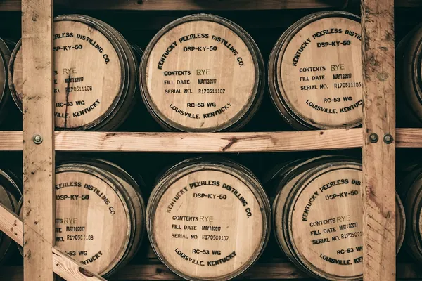

Kentucky: Bourbon and rye whiskey

Photo: Daniel Norris on Unsplash
Bourbon can be made anywhere in the USA, but the great majority comes from Kentucky, helped by limestone-filtered water and hot summers.
How it's made
Bourbon must be at least 51% corn and aged in new charred oak containers; 'straight' bourbon is aged at least two years.
A grain mash of at least 51% corn, with rye or wheat and malted barley, is often soured with spent mash from a previous run (sour mash). It is distilled in a column still and then a doubler or thumper, coming off at no more than 80% ABV.
History
Settlers in the late 1700s distilled their surplus corn into whiskey. The Bottled-in-Bond Act of 1897 set early quality standards, and after Prohibition ended in 1933 Kentucky became the centre of bourbon.
Ageing and label terms
Bourbon must age in new charred oak containers, entering the barrel at no more than 62.5% ABV. Straight bourbon is aged at least two years; if under four years, the age must be on the label. Bottled-in-Bond means at least four years and bottled at 50% ABV.
Styles
High-rye bourbons are spicy, wheated bourbons are softer and sweeter, and Kentucky also makes rye whiskey (at least 51% rye). Small-batch, single-barrel and barrel-proof bottlings are common.
Rules and protected names
Bourbon is a 'distinctive product of the United States' and can be made anywhere in the country, but it may only be called Kentucky bourbon if it is distilled and aged in Kentucky for at least a year. Nothing may be added except water.
How to serve and classic cocktails
Neat or on a large ice cube. Classic cocktails: Old Fashioned, Mint Julep (the Kentucky Derby drink) and Whiskey Sour.
With food
Barbecue, smoked pork, pecan pie, salted caramel and blue cheese all suit bourbon.
Good to know
Because barrels can only be used once for bourbon, the used casks are sold all over the world to age Scotch, rum and tequila. The Kentucky Bourbon Trail links many of the distilleries.
Producers
- Buffalo Trace
- Maker's Mark
- Wild Turkey
- Woodford Reserve
- Four Roses
Bottles to try
Buffalo Trace Kentucky Straight Bourbon
Vanilla, toffee, brown sugar and a hint of mint and spice.
Serve: Neat or in an Old Fashioned
Wild Turkey Rye
Spicy rye: pepper, cinnamon, caramel and oak.
Serve: In a Manhattan
Maker's Mark Kentucky Straight Bourbon
Soft and sweet: caramel, vanilla, baked bread and red fruit.
Strength: 45% (40% in the UK) · Age and cask: No age statement, new charred American oak
A wheated bourbon: red winter wheat replaces rye in the mash, giving a gentler, rounder taste. First bottled in 1958 at Loretto, Kentucky, and every bottle is still dipped by hand in red wax.
Serve: On the rocks or in an Old Fashioned
Woodford Reserve Distiller's Select
Dried fruit, toffee, cinnamon, cocoa and toasted oak.
Strength: 43.2% (45.2% in the USA) · Age and cask: No age statement, new charred American oak
Made at the historic distillery in Versailles, Kentucky, where whiskey from copper pot stills is blended with column-still bourbon. The official bourbon of the Kentucky Derby.
Serve: Neat, on a large ice cube or in an Old Fashioned
Bulleit Bourbon
Spicy for a bourbon: rye pepper, vanilla, maple, toasted oak and orange.
Strength: 45% · Age and cask: No age statement, new charred American oak
A high-rye bourbon, so it has more spice and less sweetness than most. The brand was launched by Tom Bulleit in 1987 and is now owned by Diageo, with its own distillery in Shelbyville, Kentucky.
Serve: In an Old Fashioned or a Whiskey Sour, or on ice
Four Roses Single Barrel
Ripe plum, cherry, rye spice, cocoa and a long, warming finish.
Strength: 50% · Age and cask: Single barrel, new charred American oak
Four Roses makes ten bourbon recipes from two mash bills and five yeast strains. The Single Barrel uses its high-rye OBSV recipe, and each bottle comes from one barrel, so it changes slightly from cask to cask.
Serve: Neat or with one ice cube
Eagle Rare 10 Year Old
Toffee, orange peel, leather, almond and a long, dry oak finish.
Strength: 45% · Age and cask: 10 years, new charred American oak
Made at the Buffalo Trace Distillery in Frankfort, Kentucky. It is one of the few widely available bourbons with a 10-year age statement.
Serve: Neat, or in an Old Fashioned
Knob Creek 9 Year Old
Rich caramel, toasted nuts, maple and charred oak with a warming finish.
Strength: 50% · Age and cask: 9 years, new charred American oak barrels
Created in 1992 by Booker Noe at the Jim Beam distillery as part of a small-batch range. Bottled at 100 proof, it was designed to taste like bourbon from before Prohibition.
Serve: Neat, on a large ice cube, or in an Old Fashioned or Manhattan
Wild Turkey 101
Bold vanilla, caramel, orange peel, rye spice and toasted oak.
Strength: 50.5% · Age and cask: No age statement, new heavily charred American oak barrels
Made in Lawrenceburg, Kentucky, with a high share of rye and a deep 'alligator' char on the barrels. Long-serving master distiller Jimmy Russell has worked at the distillery since 1954.
Serve: Neat, on ice, or in a Boulevardier, Old Fashioned or Manhattan
Elijah Craig Small Batch
Vanilla, caramel, baked apple, nutmeg and toasted oak.
Strength: 47% · Age and cask: No age statement, new charred American oak
Made by Heaven Hill in Bardstown and named after an 18th-century Baptist minister and distiller, sometimes credited in legend with first charring bourbon barrels. It carried a 12-year statement until 2016.
Serve: Neat, on ice or in an Old Fashioned
Old Forester 86 Proof
Classic and lively: caramel, banana, baking spice, orange zest and a dry oak finish.
Strength: 43% · Age and cask: No age statement, new charred American oak barrels
Launched by George Garvin Brown in Louisville in 1870, it was among the first bourbons sold only in sealed glass bottles, to guarantee its quality. It is the founding brand of Brown-Forman, and was made under licence for medicinal use during Prohibition.
Serve: In an Old Fashioned or a Whiskey Sour
Rittenhouse Rye Bottled-in-Bond
Spicy and full: rye bread, pepper, cocoa, dried orange and a long cinnamon finish.
Strength: 50% · Age and cask: At least 4 years, new charred American oak
Made by Heaven Hill in Kentucky, though the name recalls Rittenhouse Square in Philadelphia and the old Pennsylvania rye tradition. Bottled-in-Bond means one distillery, one season, at least four years in a bonded warehouse and exactly 100 proof.
Serve: In a Manhattan or a Sazerac
Blanton's Original Single Barrel
Caramel, orange zest, vanilla, honey and baking spice with a long, warm finish.
Strength: 46.5% · Age and cask: No age statement, new charred American oak, single barrel
Launched in 1984 by master distiller Elmer T. Lee at what is now Buffalo Trace, it was the first bourbon sold commercially as a single barrel. Each barrel comes from the metal-clad Warehouse H, and the bottle stoppers show a horse and jockey in eight different poses.
Serve: Neat or on a large ice cube
Michter's US*1 Kentucky Straight Rye
Spicy and bright: rye spice, black pepper, butterscotch, citrus and toasted oak.
Strength: 42.4% · Age and cask: Straight rye (at least 2 years), new charred American oak, single barrel
Each bottle comes from a single barrel, chosen by Michter's in Louisville. The brand name revives a historic Pennsylvania distillery that closed in 1989.
Serve: In a Manhattan or Sazerac, or neat
More whisky regions
Explore all spirits in the interactive guide
The Wine Reference newsletter
New wines, stories and career guides, one email a week at most.
Over 18s only. Unsubscribe any time with one click. Your email is stored securely by Kit and never shared.
Support The Wine Reference
This guide is free, with no paywall. If it helped you choose a bottle, you can buy me a glass and keep it growing.
🍷 Buy me a glass